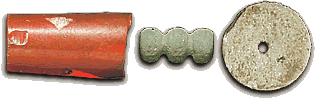

How do we know?Scholars believe that the skills needed for trades such as beadmaking would have been passed down from father to son. 
It was common in ancient times for people to teach their children skills or a trade that had been in a family for generations. Although it is less common today, it is still not unusual for a family to teach younger generations a traditional trade. |